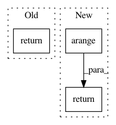

65a215646c653ab808170c8b8c10de2945262613,keras/backend/theano_backend.py,,in_top_k,#Any#Any#Any#,1496
Before Change
predictions_top_k = T.argsort(predictions)[:, -k:]
result, _ = theano.map(lambda prediction, target: any(equal(prediction, target)), sequences=[predictions_top_k, targets])
return result
// CONVOLUTIONS
After Change
return T.ones_like(targets, dtype="int8")
predictions_k = T.sort(predictions)[:, -k]
targets_values = predictions[T.arange(targets.shape[0]), targets]
return T.ge(targets_values, predictions_k)
// CONVOLUTIONS
In pattern: SUPERPATTERN
Frequency: 3
Non-data size: 3
Instances
Project Name: keras-team/keras
Commit Name: 65a215646c653ab808170c8b8c10de2945262613
Time: 2017-04-07
Author: myutwo150@users.noreply.github.com
File Name: keras/backend/theano_backend.py
Class Name:
Method Name: in_top_k
Project Name: OpenNMT/OpenNMT-py
Commit Name: ba164c0dbb3d8171004380956a88431f4e8248ba
Time: 2017-08-01
Author: bpeters@coli.uni-saarland.de
File Name: onmt/Models.py
Class Name: Embeddings
Method Name: make_positional_encodings
Project Name: microsoft/nni
Commit Name: afb4e78c5c9c4782482777fd8587c636711ab2e5
Time: 2019-08-04
Author: suiguoxin@gmail.com
File Name: src/sdk/pynni/nni/gridsearch_tuner/gridsearch_tuner.py
Class Name: GridSearchTuner
Method Name: _parse_quniform